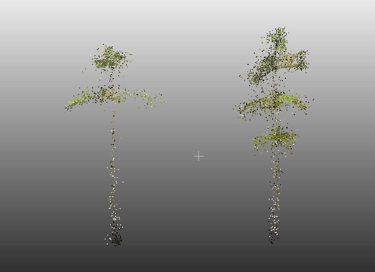
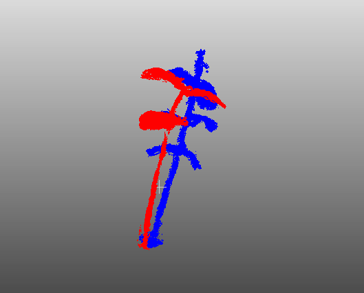
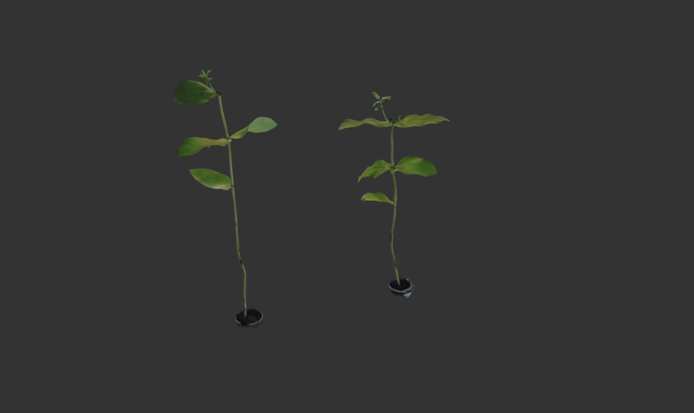
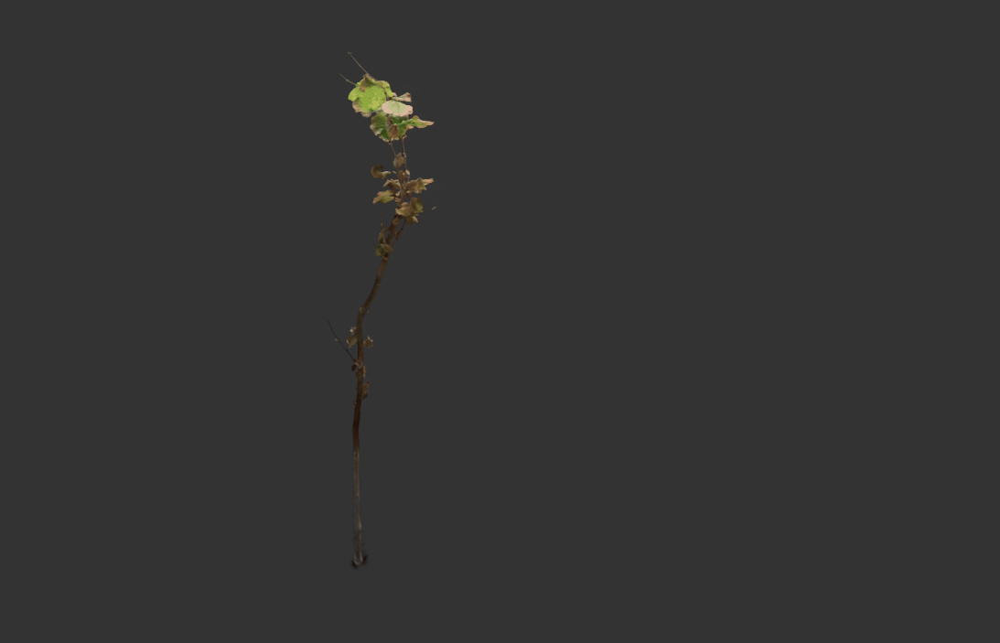
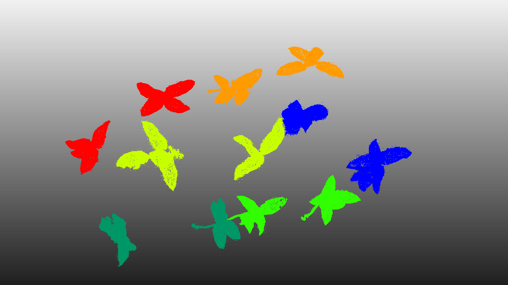

Modelos hidrológicos
Aplicación de herramientas de modelación para analizar procesos hidrológicos, comportamiento de cuencas, disponibilidad de agua, respuesta frente a cambios ambientales y gestión del recurso hídrico.
Mi trabajo e intereses se enfocan en el uso de tecnologías digitales y herramientas de análisis para estudiar plantas, vegetación, recursos naturales y procesos hidrológicos. Integro modelación, información geoespacial, LiDAR, visión computacional, reconstrucción tridimensional e imágenes espectrales.
Mi perfil reúne conocimientos forestales, ambientales, hidrológicos y tecnológicos, con especial interés en la integración de datos, imágenes, modelos y herramientas digitales para analizar vegetación y territorio.
He desarrollado experiencia e interés en análisis de datos, herramientas de oficina, climatología, sistemas de información geográfica, sensores remotos, silvicultura, hidrología forestal, modelación, LiDAR, visión computacional y fenotipado digital de plantas.
Mis principales líneas de interés se concentran en tres áreas que integran conocimientos forestales, ambientales y tecnológicos.
Aplicación de herramientas de modelación para analizar procesos hidrológicos, comportamiento de cuencas, disponibilidad de agua, respuesta frente a cambios ambientales y gestión del recurso hídrico.
Obtención y análisis de características morfológicas, estructurales y espectrales de plantas mediante visión computacional, imágenes 2D, reconstrucción 3D, información hiperespectral, multiespectral y sensores.
Uso de imágenes satelitales, datos LiDAR y sensores multiespectrales e hiperespectrales para caracterizar vegetación, analizar el territorio y obtener variables biofísicas y ambientales.
Estos proyectos representan las principales líneas de trabajo e investigación que desarrollo o deseo profundizar.
Evaluación de procesos hidrológicos y respuesta de cuencas mediante herramientas de modelación, análisis de datos climáticos, información espacial y variables del territorio.
Comparación y aplicación de métodos como Structure from Motion, Multi-View Stereo y 3D Gaussian Splatting para reconstruir plantas a partir de fotografías, generar nubes de puntos y producir representaciones tridimensionales.
Desarrollo de métodos digitales para medir y caracterizar plantas mediante imágenes, modelos 3D, visión computacional e información hiperespectral y multiespectral.
Análisis de la presencia de vegetación dentro del buffer correspondiente a la franja de seguridad de redes eléctricas. Mediante datos LiDAR se busca determinar altura, cobertura y cercanía de la vegetación respecto de la infraestructura eléctrica.
Ejemplos de reconstrucción tridimensional obtenidos mediante Structure from Motion, Multi-View Stereo y 3D Gaussian Splatting. La galería permite comparar nubes de puntos, reconstrucciones densas y representaciones hiperrealistas.

Reconstrucción inicial obtenida mediante Structure from Motion. Este procedimiento estima la posición de las cámaras y la estructura tridimensional de la planta a partir de fotografías superpuestas.

Reconstrucción densa generada mediante Multi-View Stereo. Este proceso aumenta la cantidad de puntos y permite representar con mayor detalle la geometría tridimensional de la planta.


Estas reconstrucciones fueron obtenidas mediante 3D Gaussian Splatting. La metodología representa la escena mediante gaussianas tridimensionales y permite generar visualizaciones continuas, detalladas y de apariencia hiperrealista desde distintos puntos de vista.

Representación puntual asociada al modelo generado mediante 3D Gaussian Splatting. Esta visualización permite examinar la distribución espacial de los elementos que conforman la reconstrucción y comparar su estructura con las nubes generadas mediante SfM y MVS.
Puedes utilizar esta sección para agregar tus perfiles profesionales, académicos y datos de contacto.
Actualmente puedes enlazar tu perfil de GitHub y, posteriormente, agregar correo electrónico, LinkedIn, ORCID, ResearchGate o publicaciones.